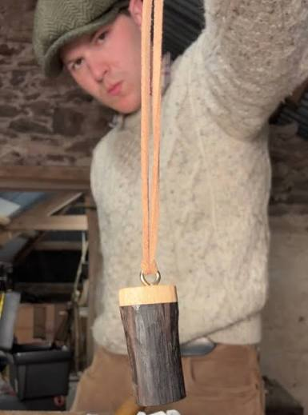

Whatever comes off the bench in small batches ends up here: pint pendants today, walking sticks and shillelaghs as they're made. Everything is carved by hand from native Irish timber, in batches small enough that they tend to sell out fast.

Sold outInspired by the iconic pint of porter, each pendant is carved from two native Irish woods: the creamy "head" from holly, and the dark "porter" from ancient bog oak, timber that spent thousands of years preserved in Irish bog before taking on its deep colour.
Sustainably sourced, lightweight, and made in small hand-carved batches that tend to sell out quickly. New batches are announced first on Instagram and TikTok.
Get notified of the next batch →New handmade pieces get added here as they're finished. Follow along on Instagram or YouTube to see them get made before they show up in the shop.